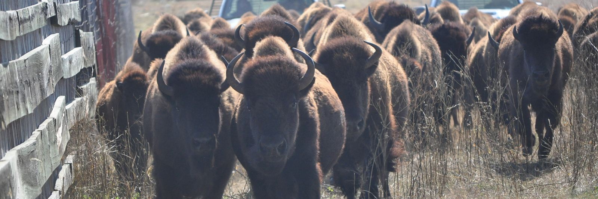
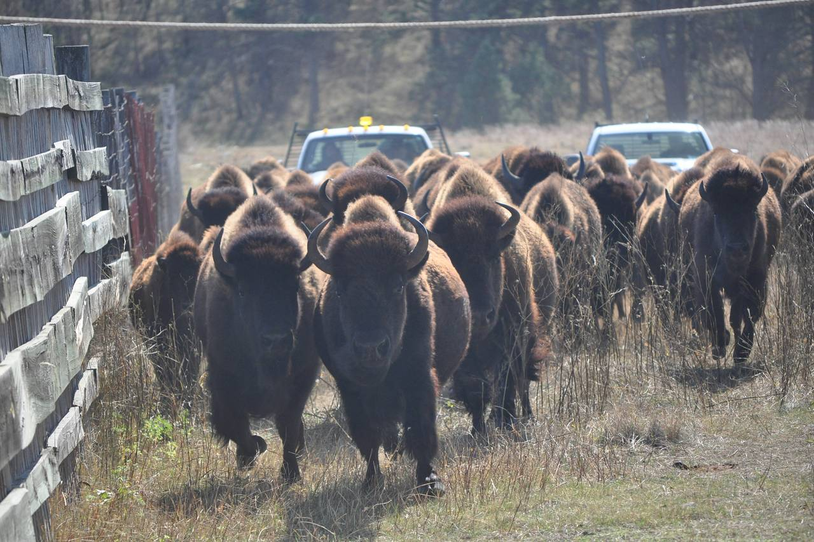

Beef and bison herds by mail
Draw blood at the chute or the handling system on a day the animals are already in, mail the tubes, and the lab reports which ones are open. BVD PI testing works the same way, by ear notch or blood.
Pregnancy checks for cow-calf herds
Check at weaning or a month after the bull comes out, and cull on the answer instead of wintering an open cow.
Cows can be sampled 28 days after breeding and should be at least 90 days since calving. Virgin heifers can be sampled 25 days after breeding.
- Draw on a day the cattle are already in the chute.
- Using a new needle for each cow, draw 2cc of whole blood into a new red-top tube. Number each tube in the order of the form, and write the animal ID on it.
- Pregnancy blood tubes do not need ice. Package tubes in padding for safe delivery.
- Put the Cattle-Bison Pregnancy Test Submission Form in the box and mail it so it reaches the lab by Wednesday.
Ready to draw samples? See how to tail bleed a cow. For the box itself, see packing and shipping.
When can I test?
Cows and bison from 28 days after breeding, virgin heifers from 25.
If the bull ran with the cows, enter the day he came out.
Days from shipping to arrival at the lab. Overnight means a next-day carrier.
Cows and bison can be sampled 28 days after breeding, virgin heifers at 25. If that date is today or past, she can be sampled now.
Boxes that reach the lab Monday to Wednesday are in that Thursday's report. With Priority Mail, usually 2 days, ship by Monday. With overnight shipping, ship by Tuesday. A box shipped later is in the next week's report.
Priority Mail usually takes 2 days but is not guaranteed. Shipping a day earlier, or overnight, leaves a margin. The Postal Service does not deliver on federal holidays, and next-day carriers do not deliver on New Year's Day, Memorial Day, Independence Day, Labor Day, Thanksgiving or Christmas. A box that would arrive on a weekend or one of those days counts from the next lab day. If the report Thursday is a holiday, call (715) 653-2201 for that week's report day.
Bison ranches
The assay is validated in bison, and nobody wants to palpate one. Draw at the handling system, mail the tubes.
Bison follow the cattle rules on this page. The tail-vein draw is the cattle and bison procedure, bison go on the Cattle-Bison Pregnancy Test Submission Form, and BVD PI testing is for cattle and bison.

BVD PI testing for beef herds
One ear notch or blood sample finds a persistently infected (PI) animal; BVD PI testing explains what PI means. Beef herds run the same program at weaning and at purchase.
One trip through the chute
When you check the cows at weaning, the calves are in the pens too. Notch them for BVD PI the same day. Each test has its own form. Ear notches ship cold and must reach the lab within 48 hours; pregnancy tubes need no ice. Call (715) 653-2201 before packing both in one box.
- Calves less than 12 months old should be tested by sending a skin (ear notch) sample to our lab. Adult cattle can be tested with either a blood (serum) sample or a skin sample (ear notch) submitted to our lab.
- Test every purchased addition before it joins the herd, bulls included.
- Ear notches and BVD blood ship cold and must reach the lab within 48 hours of collection.
The BVD PI testing page has the whole-herd program, a planner for your herd size, the price and the form. For a testing and vaccination plan for your herd, call (715) 653-2201.
Reading the report
Samples that reach the lab by Wednesday are reported Thursday by email, fax or phone, whichever you mark on the form. BioPRYN reports each animal as pregnant, open, or recheck, and Dr. Pearson reads every plate.
Every testing client can call or email Dr. Pearson about a result: (715) 653-2201 or info@dairydoctor.com.
What each result means, and the limits of a blood test: how your results are read.
Forms for beef and bison herds
Cattle and bison pregnancy
Cattle-Bison Pregnancy Test Submission Form
Download PDF, Cattle-Bison Pregnancy Test Submission FormBVD PI
BVD PI Test Submission Form, for blood or ear notch samples
Download PDF, BVD PI Test Submission FormMore animals than lines on the form? Print a second copy. Running low on tubes or needles? Order more on the same form.
Price per test: see pregnancy testing and BVD PI testing.
First box? Please call our office before your first submission, at (715) 653-2201, or send the new client form. We'd like to meet you. A call settles which supplies you need.